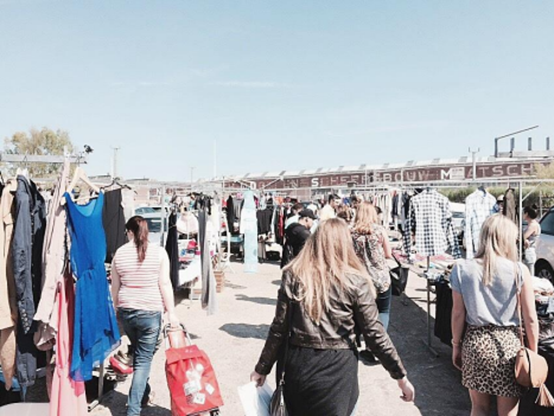

SWEDEN MINORITIES MISS OUT MILLIONS
Sweden’s minorities miss outon millions whilestategrants are
spent mainly“on administration”

A year after year, Swedish municipalities pile up the state money allocated to support minorities while international community alarms about poor state of their rights in this Scandinavian country Sari Ebesoh’s from Gothenburg is a mother of an international family: she’s Finnish, her husband is Nigerian, and their children are growing up in Sweden. With more than three languages spoken at home, Sari wants her kids to be fluent in Finnish as well. Despite this right provided by law, the woman is almost unable to count on schooling for it. Her two young daughters, five and eight years old, didn’t have Finnish classes at their home school. So in order to attend afternoon mother tongue classes, they had to take a tram to Frölunda, a troubled area in the south of Gothenburg. “I cannot let them go during the afternoons by themselves. It was really a struggle”, Sari explains, adding that she wasn’t able to give children lifts due to her tight work schedule. Swedish municipalities can’t afford sustainable mother tongue tuition, though the state costs for granting minorities rights are growing every year. Sweden is home to large populations of Finns, Sami, Tornedal, Romani, and Yiddish which constitute up to eight per cent of Sweden’s ten-million population. Council of Europe had been criticizing the country’s approach to its minority policy for the past decade and a half. Since 2010, the Minority Act granted them enhanced rights including language learning, mother tongue pre- school tuition, and elderly care. The municipalities that have chosen to be part of administrative areas for the minorities receive an annual state grant based on their total population, which is 66 million SEK on average. Over the course since the Act came into effect, all Swedish municipalities have piled up 52 million SEK altogether.
Hazardous substances on the EU markets
Customers are looking for cheap clothes, without paying attention to their quality; do you expect a trouser with 50 kronor to be with a high quality?” Kiosk’s owner at Kviberg street market.

Hundreds of street stalls and kiosks inside and outside several hangars are forming Kviberg street market in the east part of Gothenburg city, where preferring low price over good quality has led to an unpleasant experience for some of the customers. Sandra Ivoq 25 years old, a frequent customer of Kviberg street market, explained, “I had a strong skin allergy and rashes after a trouser which I bought from Kviberg market has dissolved a dye on my skin although I washed it prior to first use”. The quality of the imported clothes are expected to meet a set of EU standards and regulations which aim to protect the EU consumers from exposition to potentially hazardous chemical substances to the human body, which are used during the dying process of the clothes. The European countries introduced the REACH legislation, which imposes restrictions on the use of chemical substances in the production of textile articles due to their potential danger to the human body. The REACH legislation has listed substances of very high concern that have serious effects on the human health, substances that are endocrine disruptors, carcinogenic, or are highly allergenic. The regulation applies to all chemicals imported or produced in the EU and must be controlled by all of the EU member states. The fail of implementing this regulation can lead to a serious health risk to the EU consumers considering the harmful effects of the chemical substances used in dyeing the textile and the clothes. Majority of clothes sold in the European Union imported from outside the EU. Some of these clothes, which have cheaper price but a questionable quality that can cause risk to the human body,sold in street markets in many of the EU markets such as Duisburg Market in Germany, Flea Market in the Czech Republic, and Kviberg Market in Sweden. According to the Swedish Chemical Agency (KEMI), there is a lack of adequate control of hazardous substances in the imported textile articles, since the authorization system only applied on the imported chemical substances used in the manufacturing processinside the EU. This mean that the control process does not meet the requirements stated under the REACH legislation to control all of the imported chemical substances. The Customs Administration in Czech Republic as one of the EU authorities who are responsible to implement the EU regulations, explained that the manufacturers and importers have to register chemical substances, which imported in quantities, only if these quantities exceeded one ton per importer per year; they also explained that the chemical substances in the imported textile are not controlled. One of the textile importers who distribute to Kviberg street market explained, “The goods entered the EU legally after the payment of the customs taxes. Most of the goods imported from By Lisha China, Bangladesh, and Korea. The goods are sold not only in Sweden but also in Germany, the Czech Republic, Netherlands, and many of the other EU countries, and usually sold in street markets similar to Kviberg market” While many European textile companies require their suppliers outside the EU to comply with the EU regulations around the use of hazardous substances during the production of textile and clothes, it can be difficult to small importing companies to impose similar demands on their suppliers. Many of the small importers sell their imported goods in street markets, which are the destinations of many EU consumers who are looking for cheaper-price clothes. Some of these clothes can contain hazardous substances as result of using chemical substances during the dyeing process, substances that banned under the EU regulations. Risks to the human body are possible from the use of hazardous substances in the dye of textile. “In case of high usage of chemical substances in dyeing the clothes, this can cause skin problems, itching, skin rash, and even can cause cancerous skin diseases on the long term, since the clothes touch the skin directly” Dermatologist George Tannous. In their daily life, the consumers increasingly exposed to hundreds of hazardous materials, which can exist in their clothes and present a direct danger to their health. The process of dyeing the clothes involves the usage of a wide range of chemical substances that present risk to the human body. Although the existence of EU regulations on the importation of hazardous chemical substances, the inadequate process of implementing these regulations to control the existence of the chemical substances in the imported textile, can expose many of the EU consumers to health risks especially that the majority of the clothes on the EU markets are imported from outside the EU.